Lumen user guide
Lumen is a lighting control for theatre that runs in your browser. You patch your fixtures, build scenes, write the script next to them – and during the performance you just press GO. Lumen sends DMX over Art-Net to your nodes.
This guide walks through a complete example: A Midsummer Night's Dream in a small community theatre, with four LED PARs at the front, two dimmer channels at the sides, an LED pixel bar on the cyclorama and two moving heads. All screenshots show that project – you can import it and follow along without any hardware.
01Install & start
On a Mac (recommended)
- Download
Lumen-<version>.dmgfrom the releases page, open it and drag Lumen into Applications. The app brings its own Java runtime – nothing else to install. It runs on Apple Silicon Macs. - Start Lumen from Launchpad, Spotlight or the Dock. The app is not signed with an Apple developer ID, so the very first time macOS may refuse to open it: right-click Lumen → Open, then confirm.
- When macOS asks whether Lumen may accept incoming network connections, click Allow. Lumen needs this to find Art-Net nodes (UDP port 6454) and – if you want – to be reached from a tablet.
- A small Lumen window shows the server status. Click Open in browser. The interface lives at
http://127.0.0.1:8080.
Closing the window only hides it – Lumen keeps running and the light stays on. Quit with Quit
or ⌘Q. Your data is stored in ~/Library/Application Support/Lumen, the log
in ~/Library/Logs/Lumen.
From source (any OS with Java 26)
git clone git@github.com:vinzens81/lumen-ArtNet.git
cd lumen-ArtNet
./build.sh # build with all tests (--fast skips them)
./run.sh # start, then open http://127.0.0.1:8080
./run.sh --test # try-out mode: Art-Net off, separate database data/test.dbWith run.sh the data lives in data/ in the project folder.
Download the demo project, open the
Projects tab and click Import…. If no Art-Net node is connected nothing
breaks – the stage view still glows like the real light would. To be sure no DMX reaches real fixtures, start
with ./run.sh --test.
02A tour of the screen
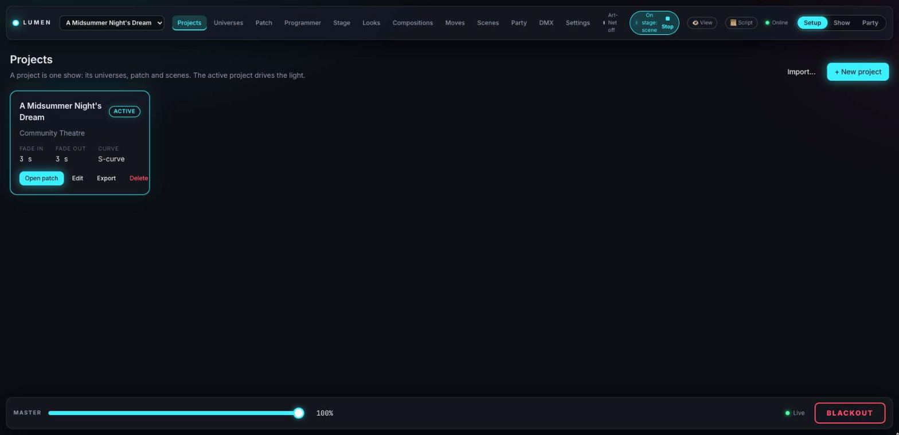
| Element | What it does |
|---|---|
| Project selector | Switches the active project – the one that drives the light. |
| Tabs | Projects · Universes · Patch · Programmer · Stage · Looks · Compositions · Moves · Scenes · Party · DMX · Settings. Only visible in setup mode. |
| Art-Net | Packets per second sent right now. Grey "Art-Net off" in try-out mode, yellow/red on send problems. |
| Nodes | "Nodes 2/2" – how many expected Art-Net nodes answer. Red when one is missing; click for details. |
| On stage | Appears while a look, composition, move or scene is shown on stage for trying out. Stop ends it. |
| 👁 View · 📜 Script | The view-only pages for phones and tablets. |
| Setup · Show · Party | The operating mode. It is server state: every connected browser follows. |
| Master bar | Grand master for all intensities and Blackout (key B). |
The three modes have their own colors so you always know where you are: setup is cyan, show amber, party pink.
03How a show is built
Lumen separates what the light looks like from when it happens. Three levels build on each other:
Look
A fixed setting: intensity and color per fixture, recorded from the programmer. "Warm wash", "Night blue".
Composition
1–n steps, each playing a look, with fade and hold times. One step is static light; several steps are a color change, a chase, a sunrise.
Scene
An entry in the cue list: a set of compositions (and moves), cue note, fade times, script and keys 1–8.
Moves sit next to looks: looks say what the light looks like, moves say where moving heads point. Compositions and looks are shared – change one and every scene that uses it changes too.
For a simple scene you do not need to think about levels: set the light in the programmer and click Record scene. Lumen creates the look, a one-step composition and the scene in one go.
04Projects
A project is one show: its universes, patch, looks, compositions and scenes. Exactly one project is active. In the Projects tab you create, edit, export and import projects.
- + New project – name, venue and the default fade times (fade-in, fade-out, fade curve). Scenes can override them later.
- Export downloads the whole project as a
.lumen.jsonfile – perfect as a backup or to take the show to another computer. - Import… always creates a new project; nothing existing is overwritten.
05Universes & Art-Net
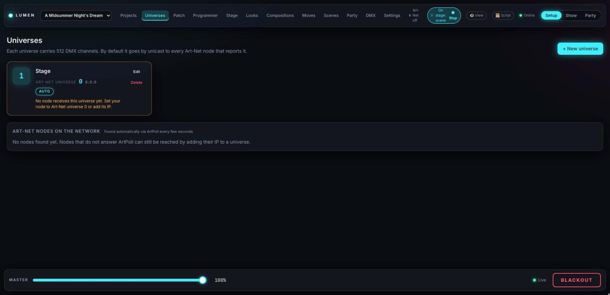
A universe carries 512 DMX channels. Create one per DMX line of your nodes and set its Art-Net universe (net:subnet:universe) to match the node.
- Auto (default): Lumen asks the network every few seconds which nodes exist (ArtPoll) and sends each universe by unicast to exactly the nodes that report it. Usually you enter no IP at all.
- Manual IPs for nodes that do not answer ArtPoll – they can be combined with Auto.
- Broadcast sends to everybody. It works, but is unreliable over Wi-Fi.
- Network interface: with several networks (e.g. Wi-Fi and a USB Ethernet adapter) pick the one the nodes are in.
Below the universes, Lumen lists every node it found with name, IP and the universes it reports. Once a node has answered, Lumen expects it: if it disappears – even before the show starts – the header turns red and show mode shows a warning.
06Patch
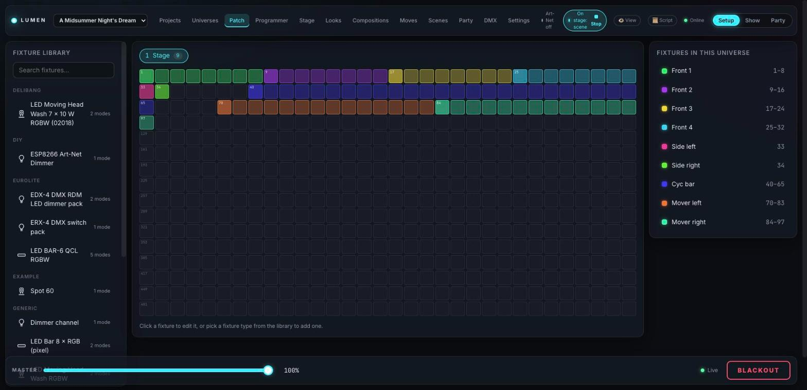
- Pick a fixture type in the library (search helps) and choose the mode your fixture is set to – the channel count must match the fixture's menu.
- Give it a name and a short name (shown on the stage view), set universe and start address. Lumen suggests the next free address; with count you patch several identical fixtures in a row.
- The address grid shows every fixture in its own color. Overlaps turn red and are listed as patch problems – click one to fix it.
- Create groups (e.g. Front, Sides, Movers) – they make selecting in the programmer fast.
Every fixture card has a Locate button that makes it light up brightly so you can find it on stage. Moving heads can get pan/tilt limits here so the show never points them into the audience.
Use ⇣ Import from Open Fixture Library below the library: download the fixture from open-fixture-library.org as Open Fixture Library JSON and import the file. Or write a small YAML profile yourself – see the profile format. Profiles are picked up while Lumen is running.
Quick setup
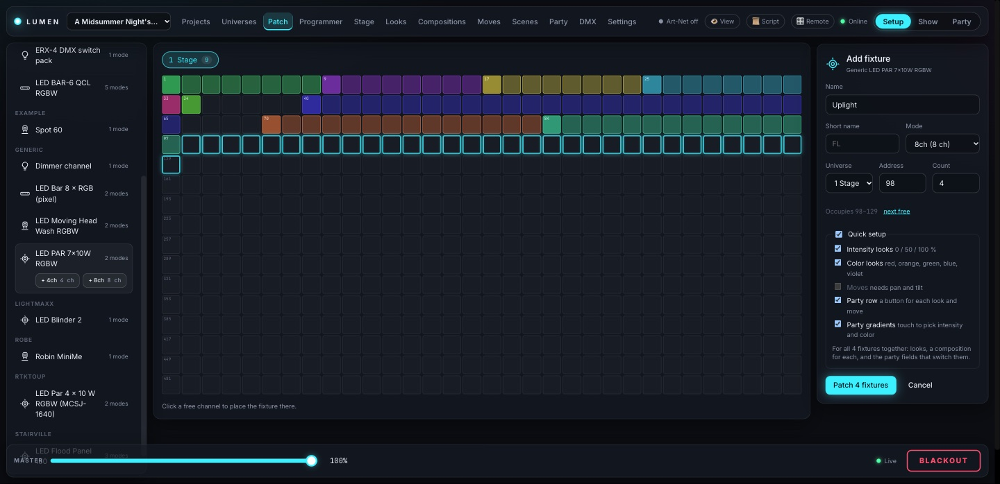
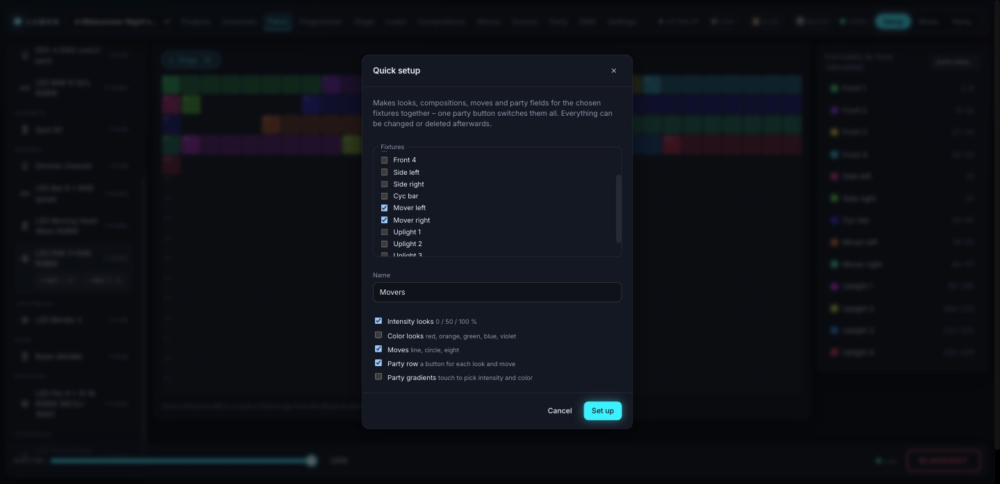
Optional help so new fixtures can be played right away. For the chosen fixtures together Lumen makes:
- Intensity looks 0 / 50 / 100 % and color looks red, orange, green, blue, violet, each with a composition of its own. LED fixtures mix the color; moving heads with CMY subtract it; a color wheel takes the slot closest to it – a color the wheel has nothing close to is left out for that fixture.
- A color palette: the colors become presets, and the looks refer to them. Pick another wheel slot for "Red" in the programmer, update the preset, and every look follows. The other slots of a wheel (e.g. yellow, white) are added to the palette too.
- Moves line, circle and eight for fixtures with pan and tilt. They start around the middle – adjust size and position in the Moves tab for your stage.
- A party row with a button for each look and move, and a row of gradients to pick intensity and color by touch – moving heads also get a pan/tilt pad there. See party mode. One button switches all the fixtures, e.g. all four uplights.
Party page chooses the tab the rows go on: a page of your choice, a new page named after the setup, or the first page with room. The looks and compositions go into the folder Auto generated, so they do not mix with the ones you build by hand.
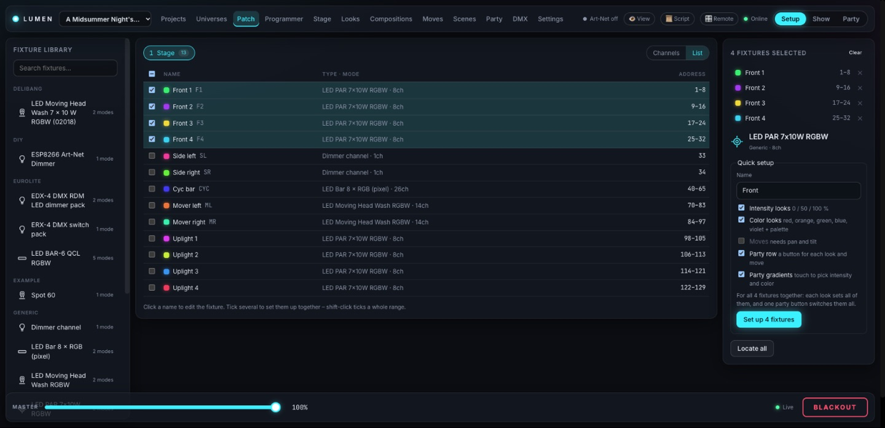
Several fixtures at once: shift-click fixtures in the channel grid, or switch the patch to List and tick them (shift-click ticks a whole range). If they are all of one type, the side panel offers quick setup for all of them together – handy for fixtures patched one by one.
Lumen remembers on each computer whether the box was ticked. Everything it makes is ordinary – rename, change or delete it like anything you built yourself. If the chosen page is full, nothing is made and Lumen says so.
07Stage
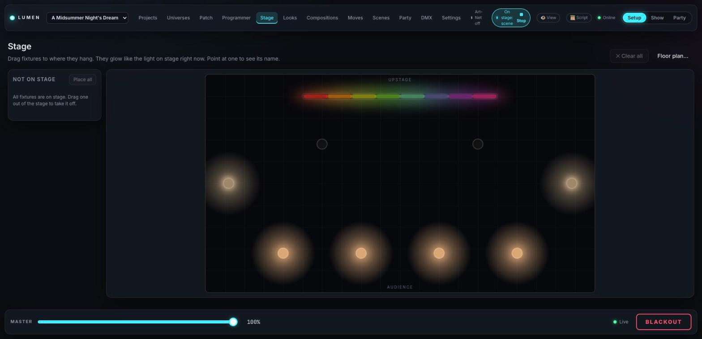
Drag your fixtures to where they hang: upstage at the top, the audience at the bottom. Drag one off the stage to remove it, Place all distributes the rest. With Floor plan… you can put a picture of your stage behind it (PNG, JPEG or WebP).
- Every fixture has a shape: spot, bar (one segment per head) or strip; rotate the selected one with R.
- Click a fixture to open the programmer controls right on the stage.
08Programmer
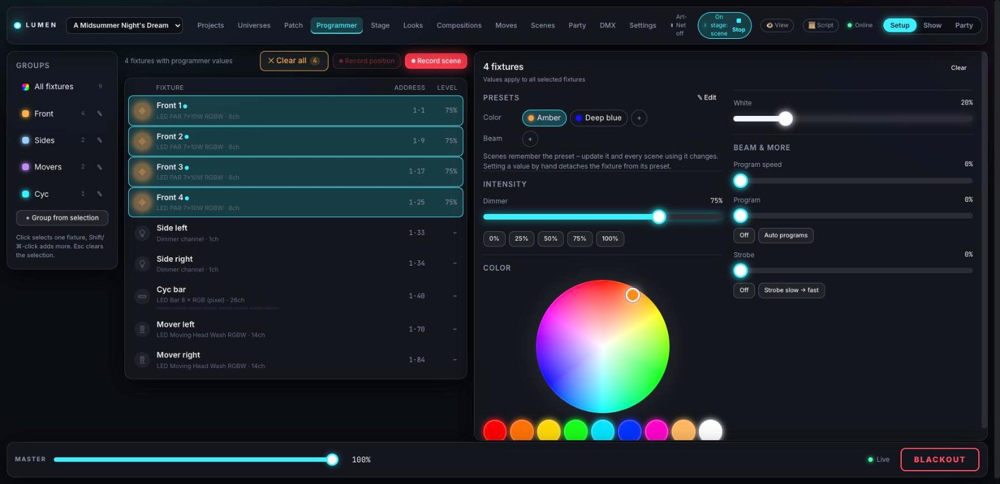
The programmer is where you set light by hand. It only works in setup mode – in show mode it is locked so nobody changes the light by accident.
- Select fixtures in the list or a whole group on the left. Shift/⌘-click adds more, Esc clears the selection.
- The panel on the right is built from the fixture type: dimmer, color wheel and color buttons for RGB(W) fixtures, an XY pad for pan/tilt, segmented faders for strobe, raw channels.
- Presets are named colors or beam settings ("Amber", "Deep blue"). Tap one to apply it, + records the current selection as a new preset. Update a preset later and every look using it changes too.
- Record scene turns what you see into a new scene; Record position stores where moving heads point as a move. Clear all empties the programmer.
09Looks
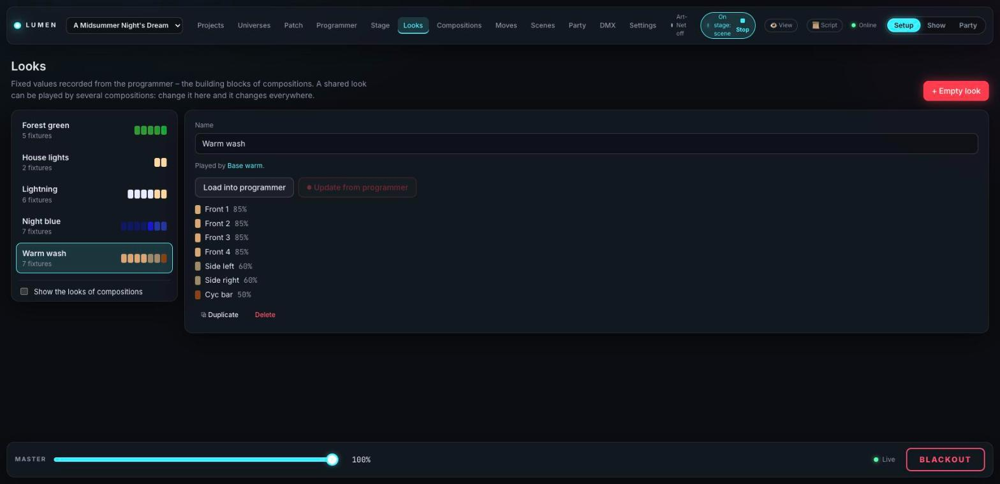
A look stores fixed values. Record it from the programmer (⏺ Record look), bring it back with Load into programmer, adjust and save with Update from programmer – either replacing everything or merging only what you changed.
- Every update keeps the previous version: History and ↶ Undo bring it back.
- A look in use cannot be deleted; "Played by …" tells you where it is used.
- Looks never contain pan/tilt – positions belong to moves.
- Folders sort the list: Manual for your own looks, Auto generated for what quick setup made, or any name you type in Folder next to the name. Click a folder to close it.
10Compositions
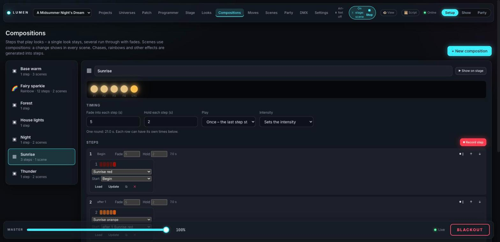
A composition plays its steps one after another. Each step plays a look.
- Timing: fade into each step and hold it; single steps can have their own times.
- Play: Loop, Ping-pong or Once (stops at the last step – a sunrise).
- Intensity: sets the intensity, or scales the light below it (for a candle flickering around the base light).
- Record step adds the programmer as a new step. Steps can also start with another step and run in parallel.
- ✦ Generate from an effect… creates the steps for you: chase, color change, rainbow, wave or flicker on a group – the "Fairy sparkle" rainbow in the demo was generated on the cyc bar, one step per pixel.
- Show on stage plays it on the real fixtures to try it out.
- 📁 Folder next to the name sorts the composition into a folder of the list – like the looks: Manual, Auto generated (quick setup) or your own.
When the same composition is in two scenes in a row, it keeps running across the GO without a jump – the base light does not flicker and a chase does not restart. Tick Restart at GO in the scene if you want it to start over.
11Moves
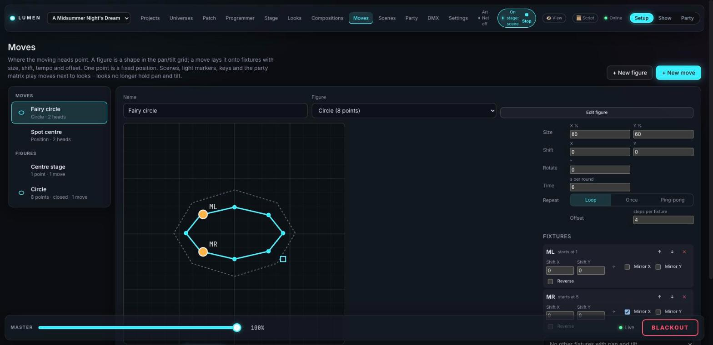
Moves tell moving heads where to point. A figure is a drawn shape in the pan/tilt grid; a move lays it onto fixtures with size, shift, rotation, time per round and an offset between the heads.
- Draw figures by clicking points, or start from a template (circle, eight, lines, triangle, rectangle, random).
- A figure with one point is simply a fixed position – "Spot centre" in the demo. Easiest: aim the heads with the programmer and click Record position.
- Each head can have its own shift, mirror and reverse, so heads hanging in different places hit the same spot.
- A head without a move in the next scene stays where it is – changing only the color does not send it home.
12Scenes & script
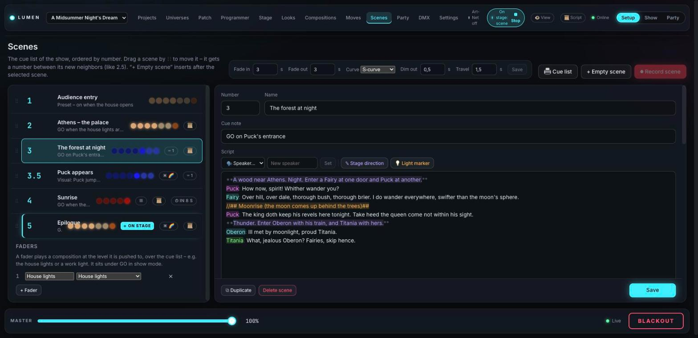
The cue list
- Scenes are ordered by their number. Need something between 3 and 4? Call it 3.5 – or drag a scene by its ⋮⋮ handle and Lumen gives it a number between its new neighbours.
- The colored dots preview each scene; small badges show keys, script, effects and the scene's own fade times.
- + Empty scene inserts after the selected scene, ⧉ Duplicate copies it, 🖨 Cue list opens a printable list.
Cue note and script
The cue note is your GO cue ("GO on Puck's entrance") – show mode shows it large for the next scene. The script is the spoken text of the scene. Write it as plain text; the editor colors it as you type:
| You write | Meaning |
|---|---|
Puck: How now, spirit! | A speech. A name with a colon at the start of a line (1–4 capitalized words) marks the speaker; every person keeps their own color. |
**Thunder. Enter Oberon.** | A stage direction – shown differently and skipped by the arrow keys. |
//## Moonrise (the moon comes up)## | A light marker: the scene changes its light here (see below). |
Times
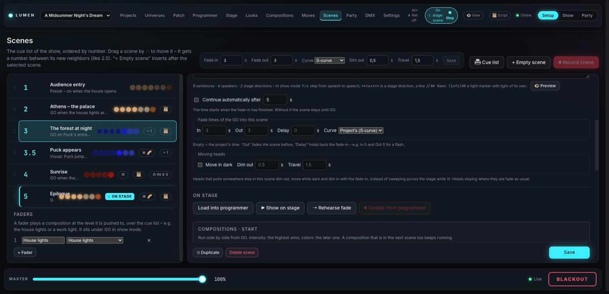
- In / Out / Delay: fade-in of this scene, fade-out of the scene before, and a delay before the fade-in starts. In 0 and Out 0 make a flash.
- Curve: linear, S-curve (soft start and end) or square law (smoother in the dark).
- Continue automatically after (auto-follow): the next GO happens by itself, counted from the end of the fade-in – for chains like "sunset in three stages".
- Move in dark: moving heads that point somewhere else dim out, move while dark and dim in at their new position, instead of sweeping across the stage lit.
- ⇢ Rehearse fade plays the GO from the scene before into this one with the real times – on the stage, in setup mode.
Light: compositions, looks, moves, light markers and keys
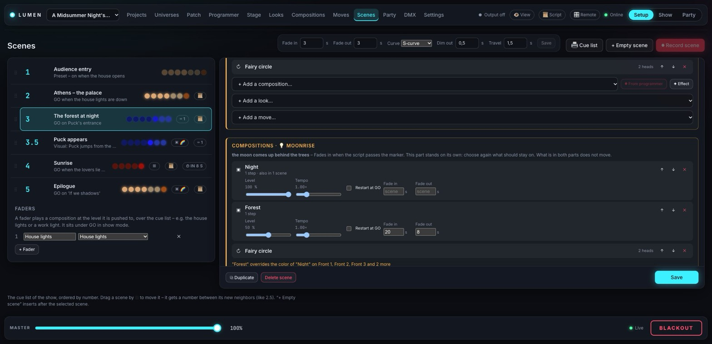
- Add compositions, looks and moves to the scene. Per composition you set level, tempo and "Restart at GO". Order is priority: for colors the later one wins, intensity takes the highest.
- Every light marker in the script gets its own section. When the operator steps past the marker during the show, the light of that part fades in with the scene's times. What is in both parts keeps running and does not move.
- Keys 1–8: compositions or moves the operator can switch on during this scene – toggle or flash (e.g. "Thunder" on key 1). A new scene inherits the keys of the scene before.
- Faders (below the cue list) play a composition at the level they are pushed to, independent of GO – house lights, work lights.
Printable cue list
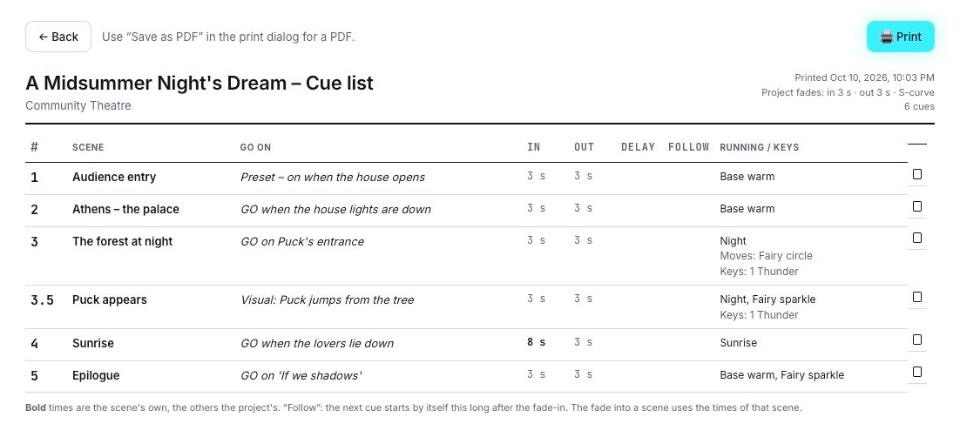
13Running the show
Switch the mode at the top right to Show. The programmer is cleared and locked, every browser switches along, and – if a PIN is set – every browser is locked again.
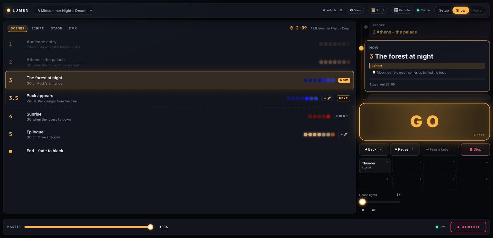
- GO (Space) fades into the next scene: fade-out and fade-in run in parallel. A double press does not skip a scene.
- Back (←) goes to the previous scene in the list. To jump, tap a scene (or Shift+↑/↓) – it becomes next and plays on the next GO.
- Pause (P) freezes fades and effects, Finish fade (Enter) completes the running fade at once.
- Stop aborts the show: everything goes dark immediately and the next GO starts from scene 1. It asks once ("Really stop?") – click again within 3 seconds.
- Keys (1–8) and faders sit below GO. Flash keys are on while held.
- Master and Blackout (B) at the bottom work in every mode.
- ⏱ Show time above the list: how long the show has been running since the GO into the first
scene, e.g.
1:02:05. A pause does not stop it; at the end of the show it stands still (grey), and Stop resets it. Every browser shows the same time.
Following the script
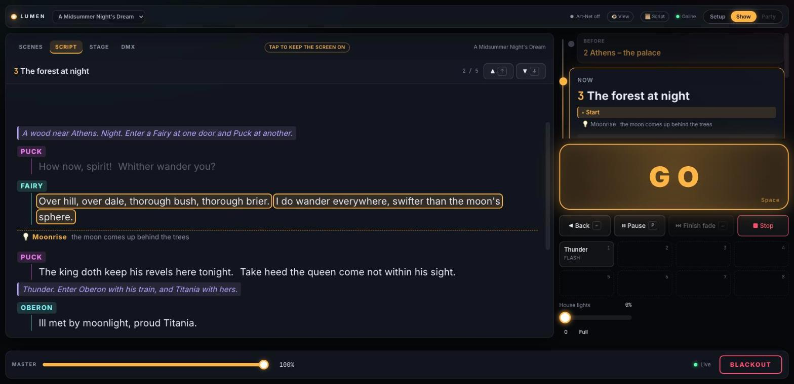
Open the Script tab to follow the text. ↑/↓ (on a tablet ▲/▼) step from speech to speech; stage directions are skipped. Stepping past a light marker changes the light of the scene. The position is shared: a second browser shows the same speech. On GO the next scene starts at its first speech.
Next to Scenes and Script there are Stage (the glowing stage view, read-only) and DMX (the live values of all used channels).
Lumen remembers the scene on stage. After a restart in show mode the show continues at once at that scene, without a fade – Lumen sends no dark frame first, so Art-Net nodes that hold their last values stay lit. The grand master starts at 100 % again. After a restart in setup mode Lumen stays dark and offers Resume the show? – one click and the scene is back.
While show mode is open the screen stays on. On a tablet over plain HTTP the browser only allows that after a tap – the hint "Tap to keep the screen on" disappears with your first touch.
14Phones & tablets
Running the show from a tablet
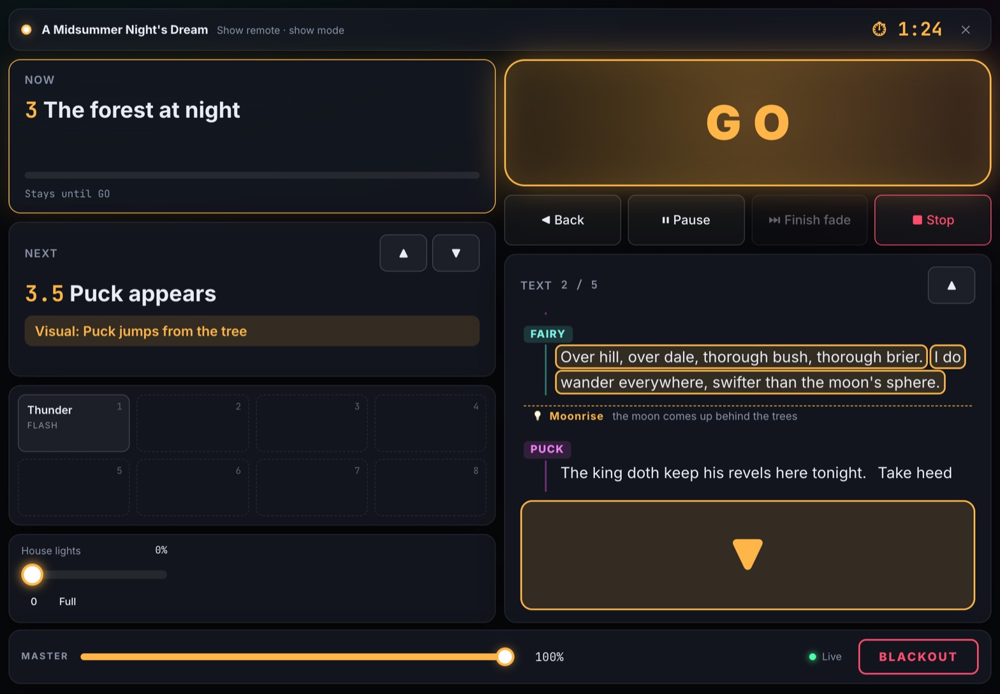
#/remote on an iPad: the Fairy's speech at the top of the script, the light marker Moonrise below it.The 🎛 Remote (http://<computer>:8080/#/remote) is the show on a tablet, with
only what the performance needs – no scene list, stage or DMX:
- Now with the fade bar, Next with its cue note – ▲/▼ choose another scene as next.
- GO, Back, Pause, Finish fade and Stop (asks once, like in show mode).
- The script of the scene with all stage directions and light markers. The current speech stands at the top, what comes next below it. The big ▼ goes to the next speech (and past a light marker changes the light), ▲ goes back. The position is shared with the laptop and the script view.
- The keys of the scene and the faders (e.g. house lights) on the left, master and blackout at the bottom, the ⏱ show time at the top.
Every part of the page has a fixed size: long names are cut and the script scrolls inside its box, so no button ever moves under your finger. The remote works in show mode only – outside it says so and the buttons are greyed out; it cannot start show mode itself. Like show mode it needs no PIN, and the screen stays on. In portrait everything stands in one column. Tip: in Safari use Share → Add to Home Screen to open it like an app.
View only
Two pages show what is happening without being able to change anything – no controls, no shortcuts, no PIN. They are meant for the prompter, stage management or the director.
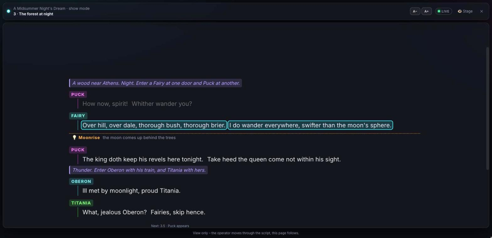
#/view/script – the script, following the operator.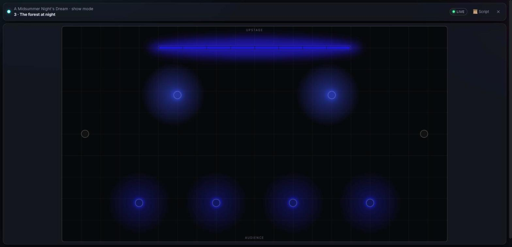
#/view – the stage, glowing live.- 📜 Script (
http://<computer>:8080/#/view/script): the script of the scene on stage, the speech the operator is at highlighted and kept in the middle. A−/A+ change the text size. Scroll by hand to read ahead – following pauses until you tap ↧ Follow the show or the next scene starts. - 👁 View (
http://<computer>:8080/#/view): the stage view with the scene and light marker on stage.
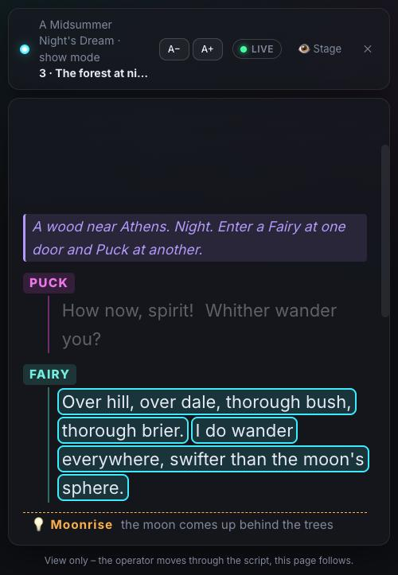
By default only the computer running Lumen can open it. Go to Settings → Network access,
tick Allow other devices in the network and restart Lumen. Settings then shows the address to type on
the tablet, e.g. http://192.168.1.20:8080. Both devices must be in the same network.
15Party mode
For the party after the premiere: no cue list, just pages of buttons that switch light on and off – filling the whole screen of a tablet, without scrolling.
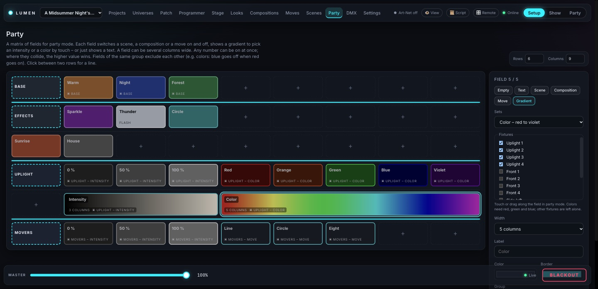
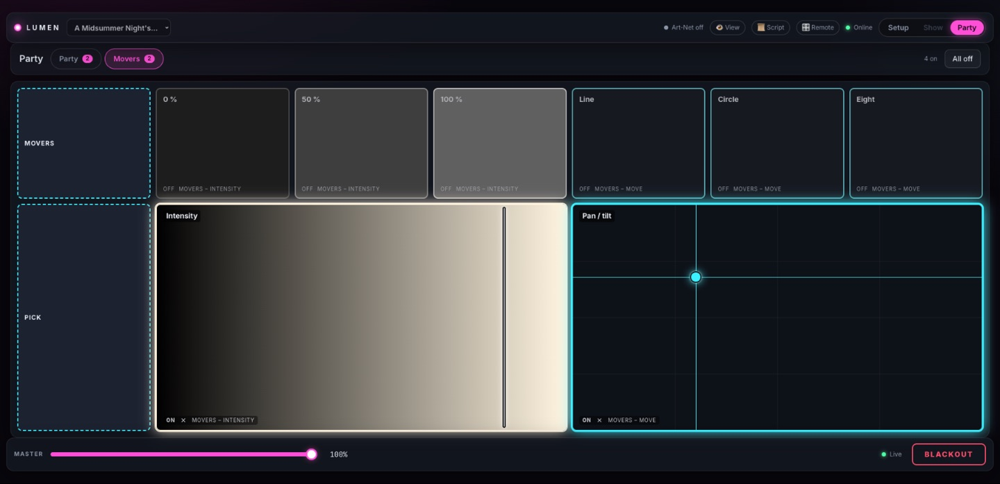
- Pages: up to 12, shown as tabs – e.g. one for the room and one for the movers. Add, rename, move and remove them above the matrix. The tabs in party mode show how many fields of a page are on.
- A field plays a scene, a composition or a move, or is just a text label. Each has a label, fill and border color and is toggle or flash. A field can be several columns wide and several rows high. Reset field empties it.
- A gradient field sets the intensity (dark to full) or the color (red over orange, yellow, green, cyan and blue to violet) of its fixtures: touch a point or drag along it, the marker shows where it is. ✕ switches it off; it remembers the point.
- A pan/tilt pad points its moving heads where you touch it: left to right is pan, bottom to top is tilt – within the limits set in the patch. Put it in the group of the moves so a move and the pad do not fight over the heads (quick setup does). Double-tap the pad (or tap ⤢ in its corner) to open it large for finer pointing: the values show to a tenth of a percent, and the arrows beside it move the heads in steps of 0.5, 2 or 5 % – handy on a tablet, where a finger covers the point (on a keyboard the arrow keys work too).
- Fields in the same group exclude each other, also across pages – switch on "Night" and "Warm" goes off. Quick setup puts the buttons and the gradient of the same kind into one group, so the color gradient replaces the color button that was on.
- Where fields collide, the higher value wins. All off switches everything off.
- Switch to Party from setup mode (not directly from show mode).
16Settings & safety
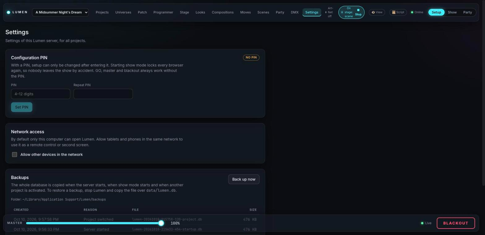
- Configuration PIN (4–12 digits): with a PIN, setup can only be changed after entering it. Starting show mode locks every browser again, so nobody leaves the show by accident. GO, master and blackout always work without the PIN.
- Network access: see phones & tablets.
- Backups: Lumen copies the whole database when it starts, when show mode starts and when
another project is activated; the newest 30 are kept. To restore one, quit Lumen and copy the backup file over
lumen.dbin the data folder. - The light does not depend on the browser: close the tab or lose Wi-Fi and the light stays as it is.
17Keyboard shortcuts
| Key | Where | Action |
|---|---|---|
| Space | Show | GO |
| ← | Show | Back |
| ↑ / ↓ | Show | Previous / next speech in the script |
| Shift+↑ / ↓ | Show | Choose the next scene |
| P | Show | Pause / continue |
| Enter | Show | Finish the running fade |
| 1–8 | Show | Keys of the scene (flash: while held) |
| B | Everywhere | Blackout on / off |
| Esc | Programmer | Clear the selection |
| R | Stage | Rotate the selected fixture by 15° |
| Delete | Stage | Take the selected fixture off the stage |
| Alt+↑ / ↓ | Scenes | Move the selected scene in the cue list |
18Troubleshooting
The stage view glows but the real light stays dark
- Does the header say Art-Net off? Then Lumen runs in try-out mode (
run.sh --test). - Open Universes: is your node listed, and does it report the same Art-Net universe? A yellow hint under the universe tells you when no node receives it.
- Nodes that do not answer ArtPoll need their IP entered on the universe.
- With several networks, pick the right network interface on the universe.
- Check the fixture's DMX address and mode against the patch, and that master is up and blackout is off.
The tablet cannot open Lumen
- Enable Settings → Network access and restart Lumen.
- Allow incoming connections for Lumen in the macOS firewall.
- Tablet and computer must be in the same network; use the address shown in Settings.
The tablet screen goes dark during the show
Tap the screen once after opening show mode, the remote or the script view – the browser only keeps the screen on after a touch when the page is served over plain HTTP.
macOS says Lumen cannot be opened
Right-click Lumen in Applications → Open and confirm. This is only needed the first time.
A fixture profile does not show up
Broken profiles are skipped and reported as library issues instead of stopping Lumen. Check the log
(~/Library/Logs/Lumen for the Mac app) or the patch view for the message.